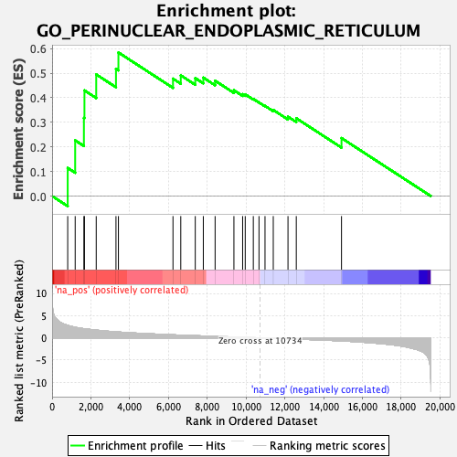
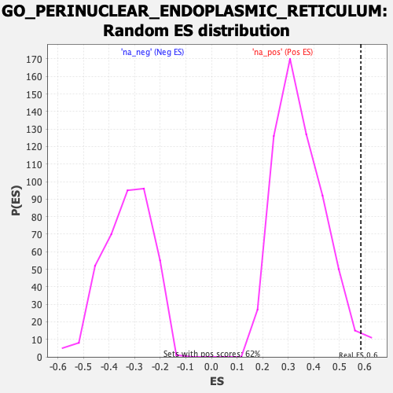

| | | Dataset | PFS |
| Phenotype | NoPhenotypeAvailable |
| Upregulated in class | na_pos |
| GeneSet | GO_PERINUCLEAR_ENDOPLASMIC_RETICULUM |
| Enrichment Score (ES) | 0.58437157 |
| Normalized Enrichment Score (NES) | 1.6709365 |
| Nominal p-value | 0.017799353 |
| FDR q-value | 1.0 |
| FWER p-Value | 1.0 |
Table: GSEA Results Summary

Fig 1: Enrichment plot: GO_PERINUCLEAR_ENDOPLASMIC_RETICULUM
Profile of the Running ES Score & Positions of GeneSet Members on the Rank Ordered List

Fig 2: GO_PERINUCLEAR_ENDOPLASMIC_RETICULUM: Random ES distribution
Gene set null distribution of ES for GO_PERINUCLEAR_ENDOPLASMIC_RETICULUM